No ads, ever
No banners, pop-ups, or video interruptions. Optional extras never change that.
NO ADS. NO NOISE.
Thoughtful puzzles, hints that teach, and a calm place to solve—online or off.
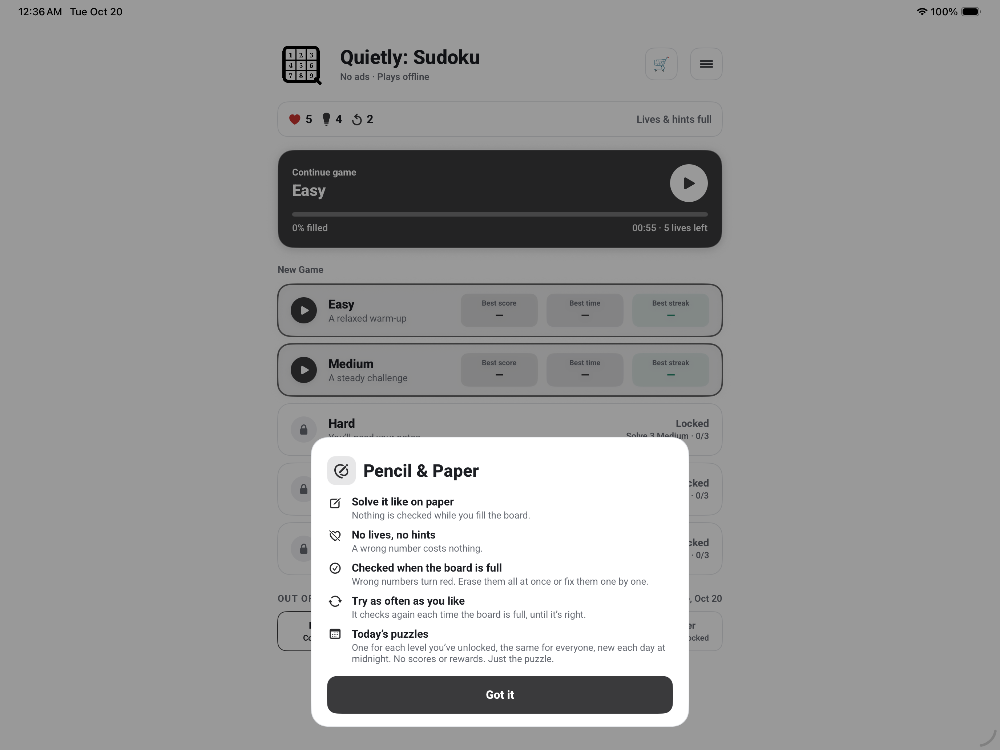
JUST THE PUZZLE
Play at your own pace. Quietly keeps the board clear and your attention where it belongs.
FEATURES
No banners, pop-ups, or video interruptions. Optional extras never change that.
Progress naturally from Easy through Medium, Hard, Expert, and Master.
Step-by-step clues point toward the deduction without immediately giving away the answer.
Fresh daily puzzles with no lives, hints, scores, or rewards—just the puzzle.
Notes, undo, larger numbers, left-handed controls, sounds, and six board themes.
Play offline. Keep progress on your device or sync privately with iCloud when enabled.
REQUIREMENTS
IPHONE · IPAD · MAC
Each image is shown at its complete aspect ratio—nothing cropped.
iPhone
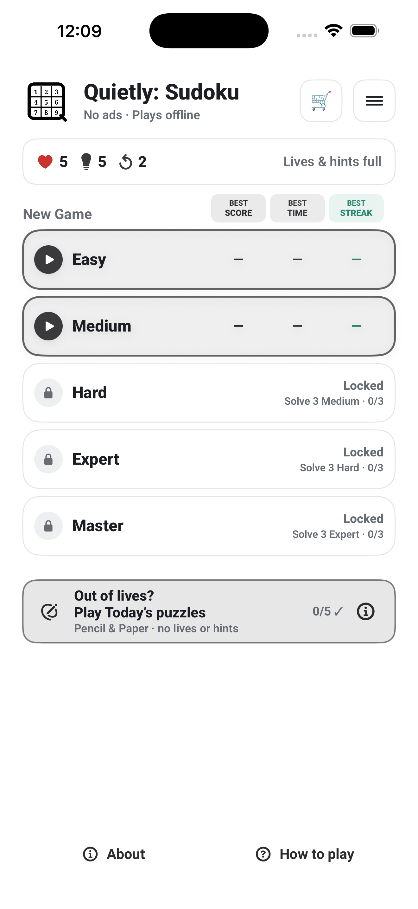
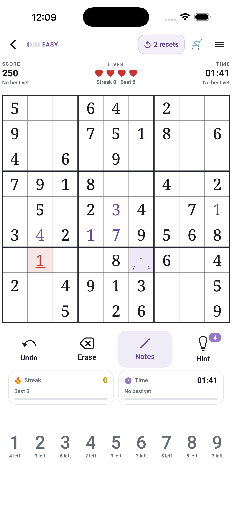
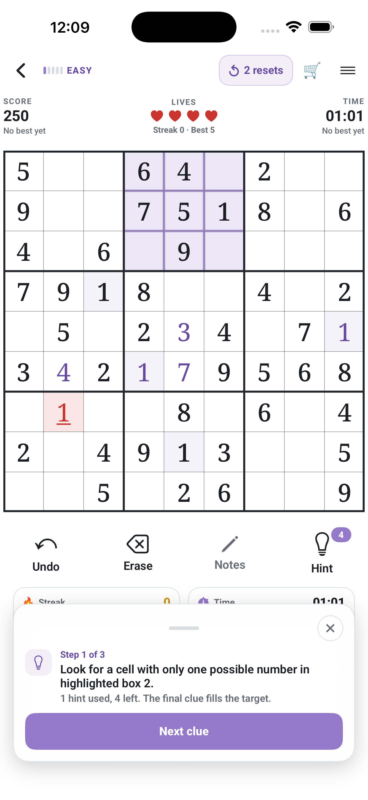
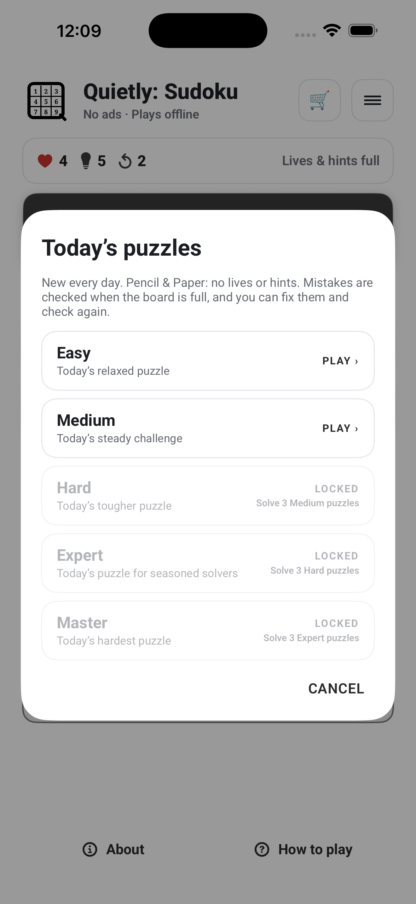
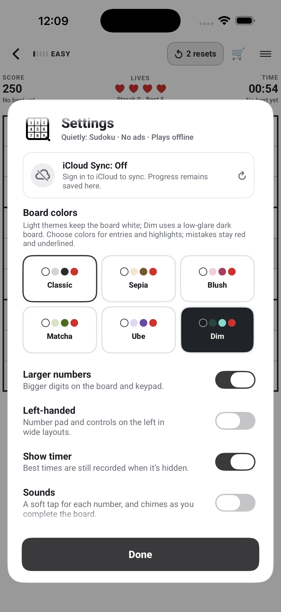
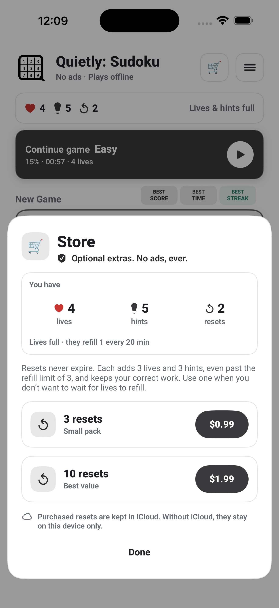
iPad
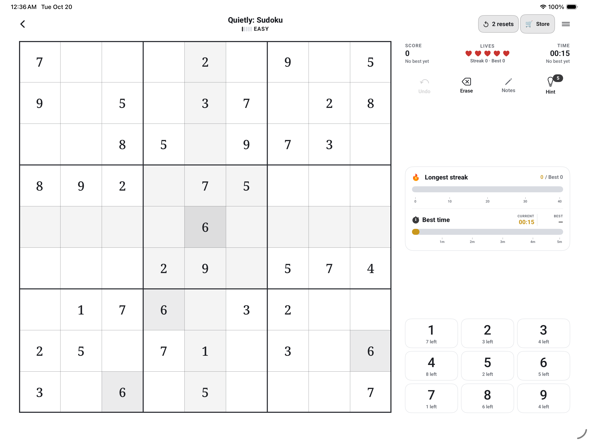
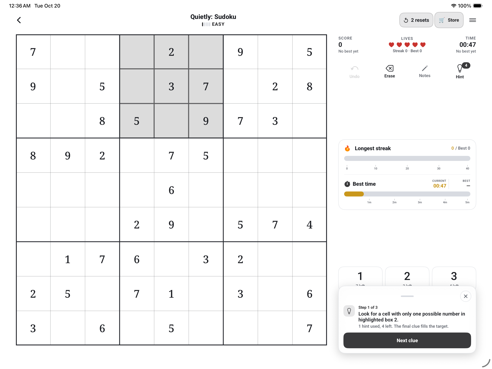
Mac
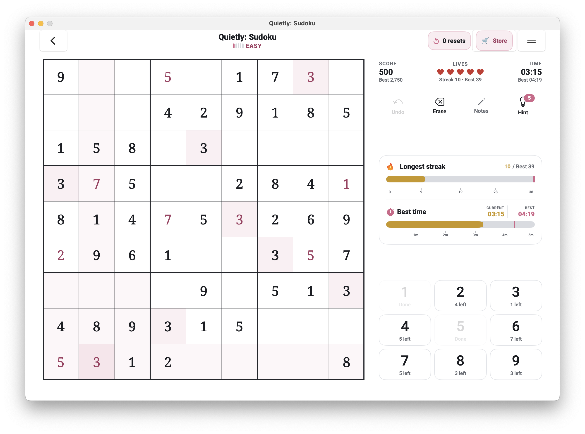
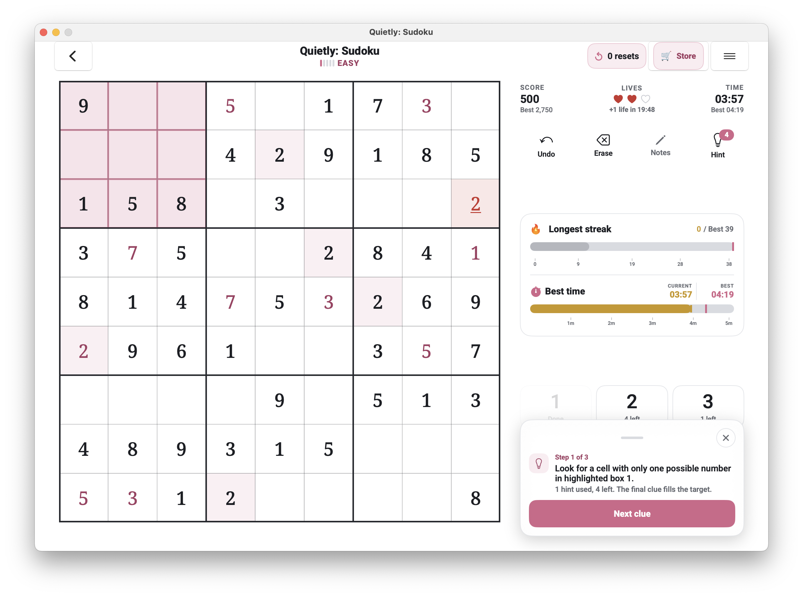
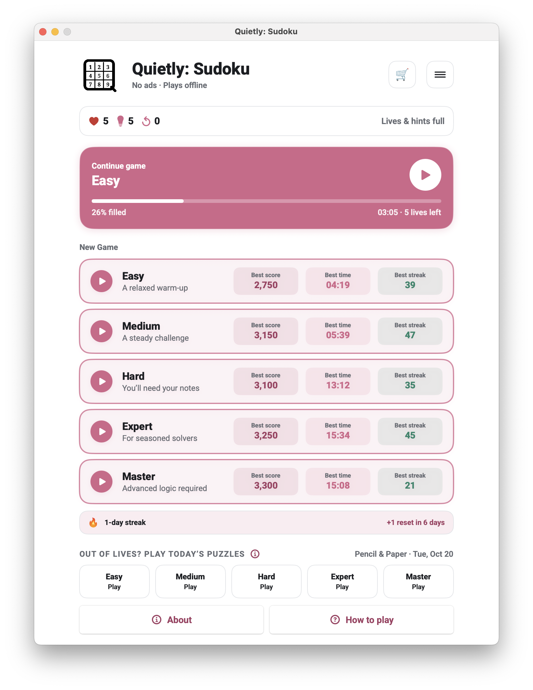

COMING TO THE APP STORE